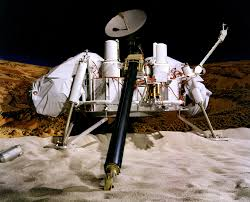
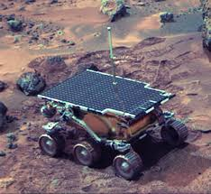
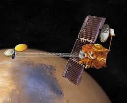
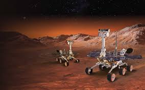
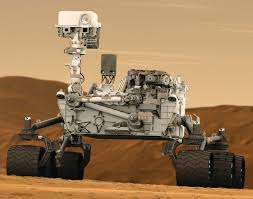
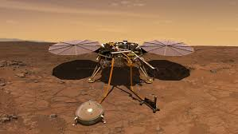
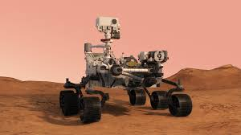
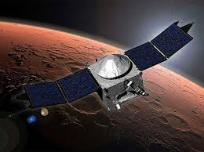

Mars Exploration
Mars has been a central target of exploration for decades due to its potential for supporting life, past or present. Robotic missions such as the Viking probes, Curiosity rover, and Perseverance rover have played a key role in gathering data about the Martian surface, atmosphere, and history. These missions are laying the groundwork for future human exploration.
Several space agencies, including NASA, ESA, and private companies like SpaceX, are planning future missions to Mars with the ultimate goal of establishing permanent human colonies.
Key Mars Exploration Missions
Viking Program (1975)
NASA’s Viking 1 and 2 were the first successful landers to reach Mars, providing high-resolution images of the Martian surface. The Viking missions also conducted biology experiments in search of microbial life, though no definitive signs of life were found.
Mars Pathfinder (1997)
Mars Pathfinder included the Sojourner rover, the first wheeled vehicle to operate on Mars. It demonstrated that rovers could navigate the Martian terrain and provided data on the planet’s weather and geology.
Mars Odyssey (2001)
Mars Odyssey orbiter played a crucial role in detecting subsurface hydrogen, indicating the presence of significant water ice beneath the Martian surface.
Spirit and Opportunity Rovers (2004)
These twin rovers exceeded their expected lifespans and discovered compelling evidence that Mars had water activity in the past. They provided critical insights into the planet’s geological history.
Curiosity Rover (2012)
Curiosity rover has been exploring Gale Crater, conducting experiments to determine if Mars could have ever supported microbial life. Its findings include the discovery of ancient riverbeds and organic molecules.
InSight Lander (2018)
InSight is studying the interior of Mars, measuring seismic activity (Marsquakes) and providing data on the planet’s crust, mantle, and core. Its mission helps scientists understand Mars' geological evolution.
Perseverance Rover (2021)
Perseverance is NASA’s latest rover, searching for signs of ancient life in Jezero Crater. It is also collecting samples that will be returned to Earth on a future mission for detailed analysis.
Mangalyaan (2013)
India’s Mars Orbiter Mission, also known as Mangalyaan, made ISRO the fourth space agency to reach Mars. Mangalyaan has provided valuable data on the Martian atmosphere and surface.